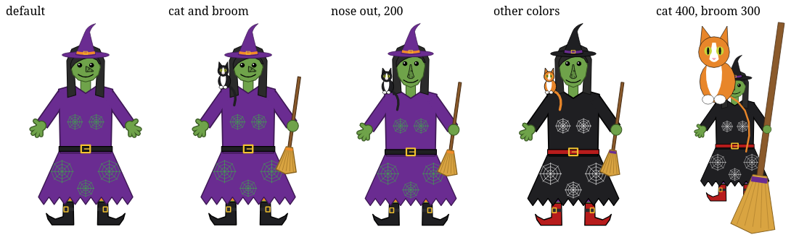
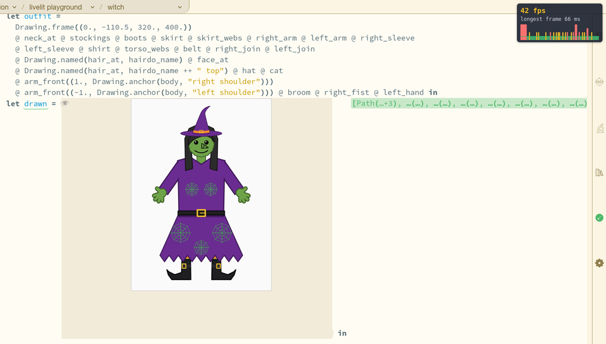
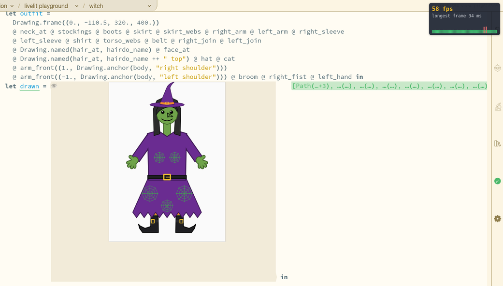
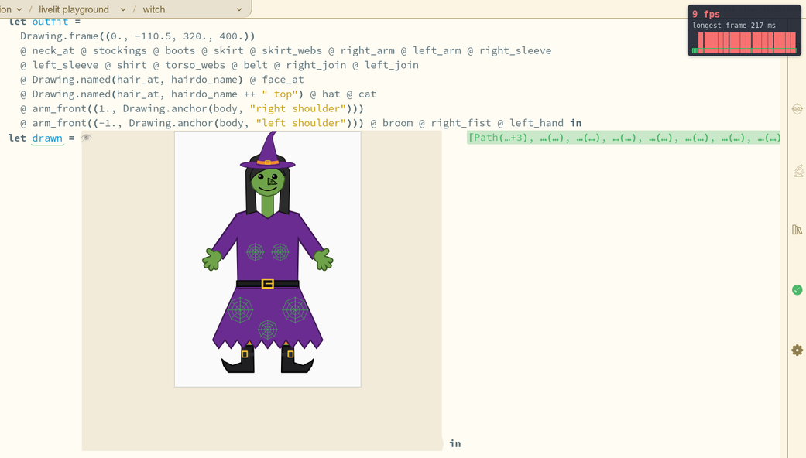

Hazel reports · report 050 · hazel-jit · 2026-11-08, revised {{updated}} MST · work in progress · for the meeting with Cyrus on Wednesday 2026-11-11 (report 042)
Toward 60 fps: hazel-jit So Far
Can you drag a livelit's slider in Hazel and watch its picture follow at 60 frames a second, as it would on a page written in JavaScript? Not yet, but close: on the Witch slide, a drag now runs at {{b8_on_fps}} frames a second with the picture following, up from {{b5_on_fps}} earlier the same day. This report follows eight builds of one branch, each measured the same way, and says what is left. It puts reports 045 to 049 together, and asks you to try it. Matthew's goal, 2026-11-08: "I'd really like Hazel to have a floor of 60FPS for small edits (sliders changing), just like in JS (but well beyond there, obviously)."
Try it yourself. The latest build (build 8, below) runs in your own browser, with a frame-rate overlay at top right that shows the frames your browser draws: the Witch slide, compiled, and, to compare, the same with nothing compiled. Drag a slider (the neck, the arms) and watch the picture and the overlay. Every slide of the Livelit Playground is linked the same way in hazelgrove/hazel#2819, which hosts this build; the overlay goes on with ?hud in the address, and is also hazelgrove/hazel#2818, for dev.
Outline
What the Witch draws: the slide every number here is measured on, 2,222 lines of Hazel with 53 livelits and one picture of 133 shapes.
Where it stands: on the latest build, a drag at {{b8_on_fps}} frames a second with the picture following, and a step in {{b8_step}}; not yet a floor of 60.
Compiled code is fast: hazel-jit runs Hazel code {{r_lo}} to {{r_hi}} times faster than the interpreter, and the slide's whole run is {{now_run_ms}} ms of a frame.
Eight builds, one change each: how a step went from {{b1_step}} to {{b8_step}}, and a drag from {{b5_on_fps}} to {{b8_on_fps}} frames a second.
The Witch slide is a Hazel program of 2,222 lines whose 53 livelits (33 sliders, choices, polygon editors and the picture) draw one figure of 133 shapes. A step of the neck slider changes 17 of the shapes; a step of the arms, 30. The picture is a livelit too: its view draws the figure the program computes from every slider. It began as a game Matthew's children, M and N, design (Messed Up Dress Up), ported to Hazel (^report(4)) so that its pieces are live code.
The drawing at left is the picture's own output, the same from Hazel's interpreter, from hazel-jit's JavaScript, and from three other compilers and JavaScript written by hand (^report(46)). Below, the same program with its choices changed, drawn by Hazel.

The Witch slide's picture with five settings of its livelits, drawn by Hazel (^report(4), 2026-10-11).
Where it stands
On build 8, the latest, a 3-second drag of the Witch's neck slider runs at {{b8_on_fps}} frames a second with views and the slide's run compiled, and the picture follows the slider at every frame. Its median frame is {{b8_on_median_ms}} ms, one display frame: {{b8_on_within_16_7}} of its {{b8_on_frames}} frames ({{now_pct}}%) fit in one 60 fps frame, and the other {{now_miss}} take two to {{now_miss_most}}. So it is not yet a floor of 60 frames a second, but most of the way there.
With nothing compiled, the same drag runs at {{b8_off_fps}} frames a second, but only the slider moves: the picture waits for the worker to run the program after the release. A single step of a slider, as a click gives it, shows in the picture {{b8_step}} after the click, against {{b8_step_off}} with nothing compiled. That is still {{now_frames}} frames at 60 fps (why).
{{fig_drag}}

Build 8, compiled: halfway through a drag, the picture in view. The overlay reads 42 fps over the last second, the longest frame 66 ms; over the whole timed drag, {{b8_on_fps}} fps (run {{now_run}}).

Build 8, nothing compiled: 58 fps, the longest frame 34 ms; but the picture does not follow the drag, it waits for the worker after the release.
The overlay is a few lines of JavaScript, on with ?hud in the address: the frames the browser drew in the last second, the longest of them, and two seconds of frame times as bars against a line at 16.7 ms, red above two frames. It times frames as the browser draws them, so a page busy for 300 ms shows as one 300 ms frame. It is how you can check any number here yourself (try it).
Compiled code is fast
hazel-jit turns Hazel code into JavaScript that runs {{r_lo}} to {{r_hi}} times faster than Hazel's interpreter; the Witch's whole run, about {{r_run}} times faster. On build 8, the slide's whole run, compiled, takes {{now_run_ms}} ms of a drag's frame. That is why the picture can follow a drag at all. It also means the run no longer stands between Hazel and 60 fps: the page's own work around it does (where the time goes now).
A view compiled is drawn straight from its JavaScript, never made a Hazel value again (^report(45)). In Firefox, compiled views draw what the interpreter draws: the check compares every livelit's drawing on every polygon slide both ways, and found {{problems}} differences in builds 4 to 8.
{{fig_compiled}}
Close to ReScript and Melange
On one rule of a Petri net, hazel-jit's code takes 1.59 µs a call: 2.9 times ReScript's, 1.8 times JavaScript written by hand, and 225 times less than Hazel's interpreter. On the Witch's picture view, all five compilers are within 15% of one another, since most of the work is one builtin. ReScript's and Melange's ways of laying out values are the models for what hazel-jit makes next (^report(46)).
{{fig_compilers}}
Eight builds, one change each
This report's own figures come from eight builds of one branch, trial/694-view-jit, each the build before it plus one change, and each measured the same way in Firefox on GitHub's machines on 2026-11-08. Over them, a slider's step went from {{b1_step}} to {{b8_step}}, and a drag from {{b5_on_fps}} to {{b8_on_fps}} frames a second. Every build compiles livelit views (^report(45)); "nothing compiled" means the same build with Compiled views turned off. Each figure names its build by number.
{{builds_table}}
The builds come in three stages:
Builds 1 to 3: the worker's answer (^report(46)). The picture waited for the worker to run the whole program on the interpreter and send back its result, 5 MB of terms. Two cuts and no sharing took a step from {{b1_step}} to {{b3_step}}.
Builds 4 and 5: the run compiled in the page (^report(49)). The slide's whole run is compiled once, with each livelit's model as a parameter, and called at the slider's event. Every livelit draws from its answers at the page's first redraw, without waiting for the worker: a step in {{b5_step}}. Build 4 still took a step back to a slider's starting value for an undo, so those steps waited for the worker.
Builds 6 to 8: a drag's frames (this report). Cut A: a drag's input events, which change nothing in the program's text, no longer go to the editor as edits of the program. Cut B: a frame draws again only the livelits whose answers changed. Cut C: the projectors' data and finished views are kept while nothing they read has changed.
{{fig_road}}
A drag, build by build
The three cuts took a compiled drag from {{b5_on_fps}} to {{b8_on_fps}} frames a second, its median frame from {{b5_on_median_ms}} to {{b8_on_median_ms}} ms. With nothing compiled, a drag went from {{b5_off_fps}} to {{b8_off_fps}}; that drag does less, since only the slider moves. Single runs vary: build 7, measured three times without changing the app, gave {{b7_all}} frames a second compiled. So a step's times for builds 5 to 7 are within that noise (cuts A and B were for a drag's input events, not a step); build 8's steps were the quickest so far, but one run each is not enough to say by how much.
{{fig_drags}}
Build 5, compiled, before the cuts: halfway through the same drag, the overlay reads 9 fps, the longest frame 283 ms (run {{b5_run}}).

Build 5, nothing compiled: 9 fps, the longest frame 217 ms, at the moment of this screenshot; over the whole drag, {{b5_off_fps}} fps.
Where the time goes now
On build 8, a drag's frame is the page's own view, {{now_view}} ms, the compiled run, {{now_run_ms}} ms, and about 4 ms of the browser's own drawing. The view is rebuilt from the whole page's state at every frame, though a drag changes only a few livelits, and it is most of each frame.
{{fig_frame}}
A step takes longer than a drag's frame because its change event is still an edit of the whole program. In a click, the input and change events come together. The input is handled as in a drag: the compiled run, then a redraw. The change goes to the editor: statics and syntax ({{st_statics}} ms), then the whole slide's view ({{st_view}} ms), all before the browser can paint, at {{st_pic}} ms. After the paint, the page compiles the program again ({{st_recompile}} ms), and the worker still runs it; its answer, at {{st_done}} s, draws the same picture again.
{{fig_step}}
Why it was slow
The series has measured 196 separate costs in Hazel, from four design choices each applied everywhere: values held as terms, whole-program work on every edit, values moved as terms across boundaries, and an interpreter that pays for the editor at every step. Many are most of the work they were found in, and many make one another larger (^report(48)). Compiling the run (builds 4 and 5) took the fourth out of a slider's step; cuts A to C (builds 6 to 8) took some of the second out of a drag. The second is most of what is left.
{{fig_cuts48}}
Values as data: held without ids, holes or closures, the Witch's picture is 3 times smaller and its trip 2.5 to 4.3 times quicker; but building values as data saves the evaluator a couple of percent at most, so the run itself had to be compiled (^report(47)).
{{fig_data}}
What next
None of these has been tried yet. Each is a change still to make, in the order that reaches 60 fps on the Witch; the middle column is the time it would take away, as measured on build 8 (or in the report named). What has been done is the eight builds (the table); the last three, cuts A to C, were this list's first item in the version of 11-08.
what to do next
what it would take away, as measured
status
1
Draw only the livelits a drag changes. Make the editors' and projectors' views incremental, so a frame no longer rebuilds the view of the whole page.
Most of the page's view: {{now_view}} ms of a {{b8_on_median_ms}} ms median frame (where the time goes now).
not started
2
Handle a slider's change event without an edit of the program, as cut A did for its input events, or do the edit's work after the paint.
Most of a step: statics and syntax ({{st_statics}} ms) and the whole slide's view ({{st_view}} ms), all before the paint at {{st_pic}} ms.
not started (^ticket(721))
3
Compile the program once, not again after a step that changed only a livelit's model: the compiled program already takes the model as a parameter.
{{st_recompile}} ms of the page's thread after each step.
not started
4
Leave the worker out when the compiled run has answered: don't run it, or don't draw again from its answer.
About a second of the worker's work a step (its answer at {{st_done}} s), and the page drawing every view again to the same picture.
not started (^ticket(720))
5
Check a step's time and a drag's frames in Firefox on every PR to dev, so they cannot slip back (^report(48)).
Nothing by itself; it keeps the rest.
the check runs on this branch only (jit.yml); build 8 is hosted for the team by hazelgrove/hazel#2819
6
Make hazel-jit's output more like ReScript's and Melange's: their layouts of records, constructors and lists, and fewer calls.
On the Petri rule, 1.59 µs a call against ReScript's 0.55 (^report(46)); on the Witch, the run is {{now_run_ms}} ms of a frame, so little there.
not started
7
Send values as data where they cross, when the worker does run: its answer and probe samples without ids or sharing.
The picture 3 times smaller and its trip 2.5 to 4.3 times quicker, measured outside the app (^report(47)).
measured, not built (^ticket(718))
8
Merge the performance PRs open against dev.
Each PR's own measured gain (^report(48)).
open, waiting for review
The five reports
{{reports_table}}
How this was put together
The builds (the table) are release builds of trial/694-view-jit, each measured by scripts/jit_slides.py in Firefox on GitHub's machines (.github/workflows/jit.yml): every polygon slide loaded with Compiled views on and off, its events run, and every livelit's drawing compared; the Witch's four slider steps each way; and, from build 5 on, the drag. Builds 1 to 3 are ^report(46)'s runs, build 4 is ^report(49)'s, and builds 5 to 8 are this report's (their data).
The drag: the Witch loaded fresh with ?hud, compiled and not, the neck slider swept from 0 to 60 and back for 3 s, one input event a frame and a change at the end, every frame timed with requestAnimationFrame. Then the same drag again with the picture scrolled into view (the slider is 1,400 lines above it; the events reach it all the same) and a screenshot halfway, so that the screenshot cannot hold up a timed frame. One drag each way per run.
Not builds: the comparisons with the interpreter and with other compilers (^report(45), ^report(46)), values as data (^report(47)) and the thousand cuts (^report(48)) measure Hazel code or values outside the app; each of those figures says so.
The Witch's drawings: its picture as ^report(46)'s compilers drew it (046/witch/svg), and ^report(4)'s screenshot of five settings.
Revised 2026-11-09, on Matthew's word: "It's really confusing to follow what version of the system each figure is plotting. Let's revise the entire thing and reorganize it to be simpler to understand." The builds are numbered, each figure names its build, the comparison with the interpreter moved up, and ^report(49)'s step timeline is drawn again on build 8.